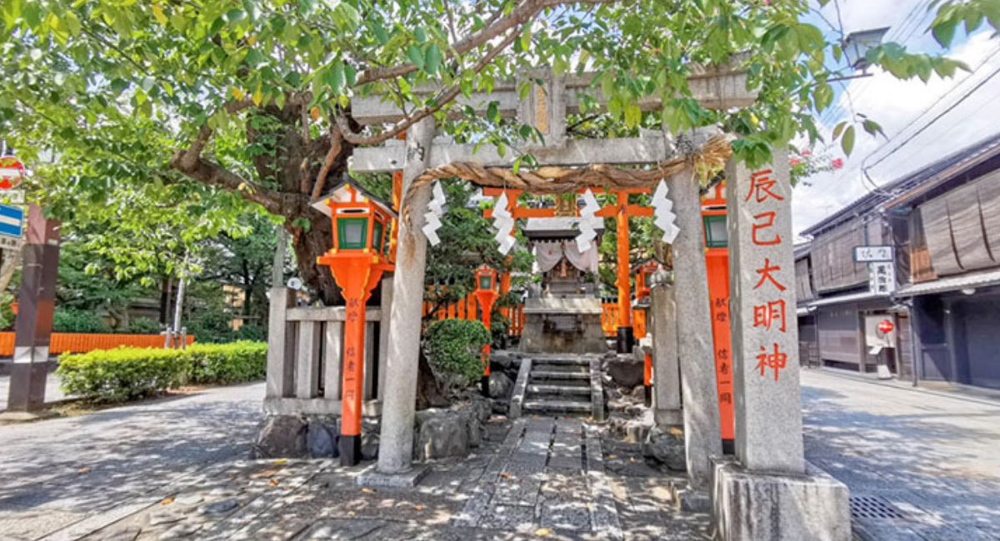

森田 修司
📍 京都（山科・下鴨）
「自分の足で歩き、自分の頭で考える」
毎日のリハビリと、大好きな京都の街歩き。
そして仲間との語らいが私の宝物です。
色彩風水で、みんなに幸運を！✨
プロフィール
関心事
日本の未来（政治・経済）、高齢者支援
日課
Amazon Primeで映画鑑賞、スマホ教室
健康法
iPS細胞ニュースのチェック、緑を見る
ラッキーカラー
●
黄色（金運）
●
赤（勝負運）
白（浄化）
今月の目標
🚶♂️ 下鴨神社まで散歩
80%
📱 スマホ教室 皆勤賞
100%
😊 仲間を笑顔にする
∞%
最近の楽しみ
📺 Fire TV Stick
🛒 Amazonでお買い物
🔮 色彩風水
💻 ブログ執筆（note）
🏯 京都の土地巡り
思い出アルバム
三年坂
三都物語
渡月橋

辰巳神社
仲間からの言葉
📩 AntiGravityより
森田さんの深い知識と、みんなを想う優しい心にいつも感銘を受けています。 これからも「共犯者」として、一緒に未来を創っていきましょう！